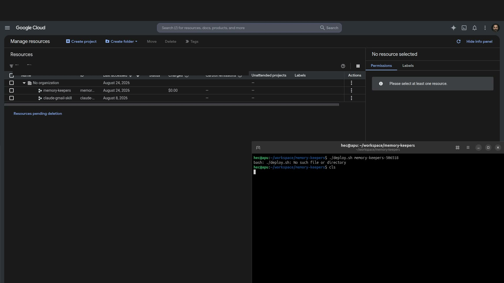
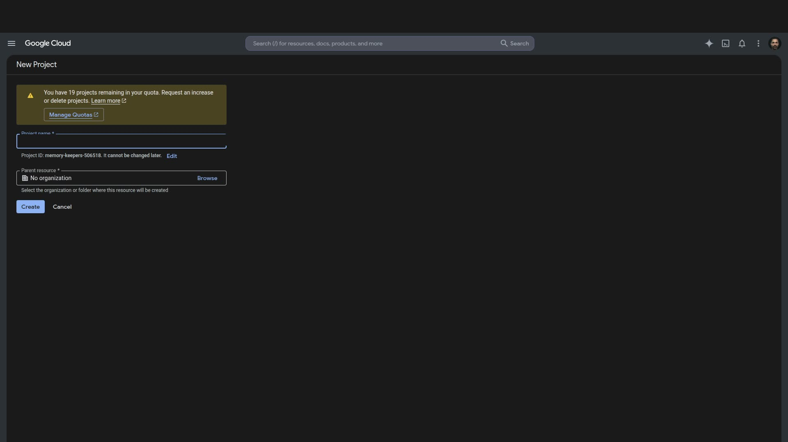
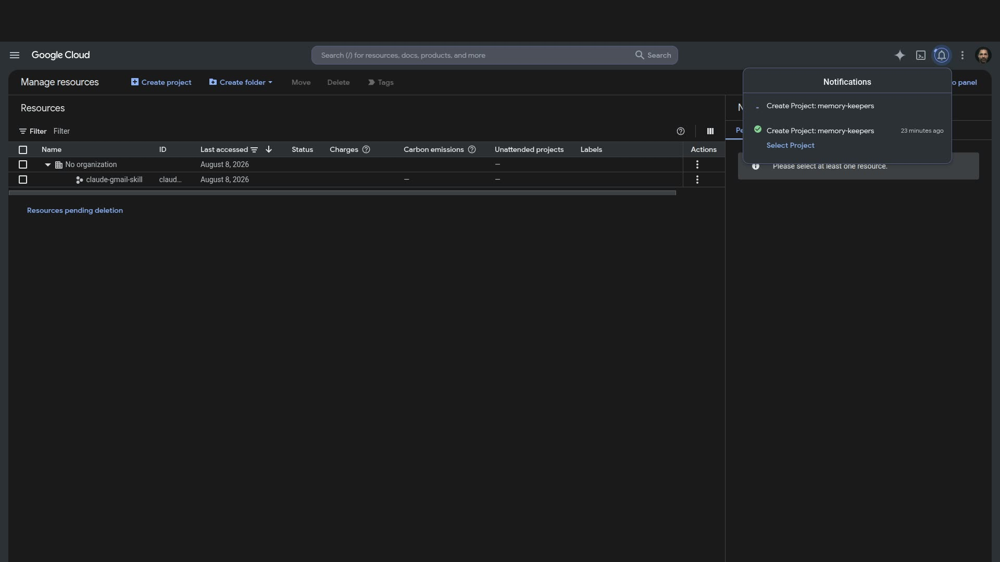
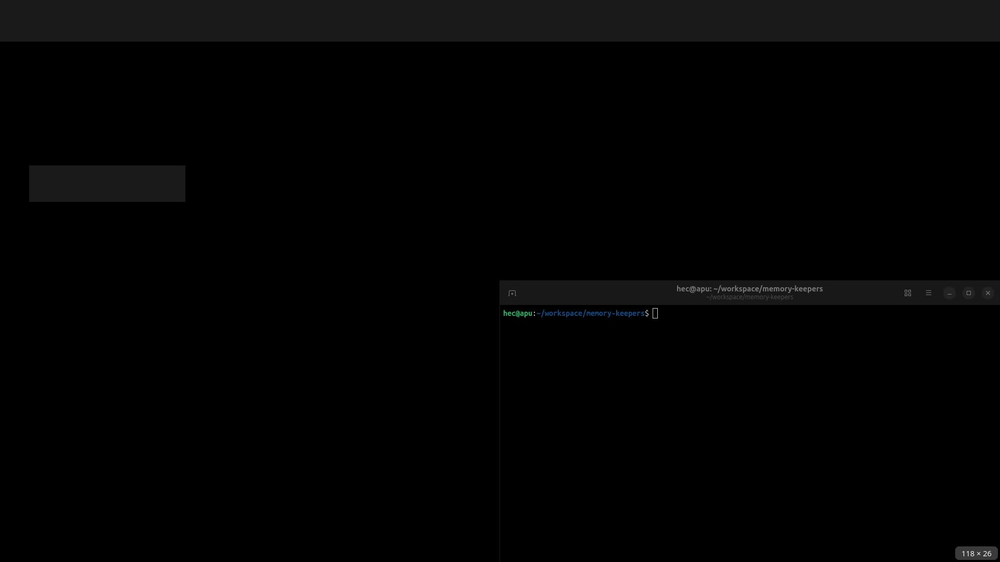
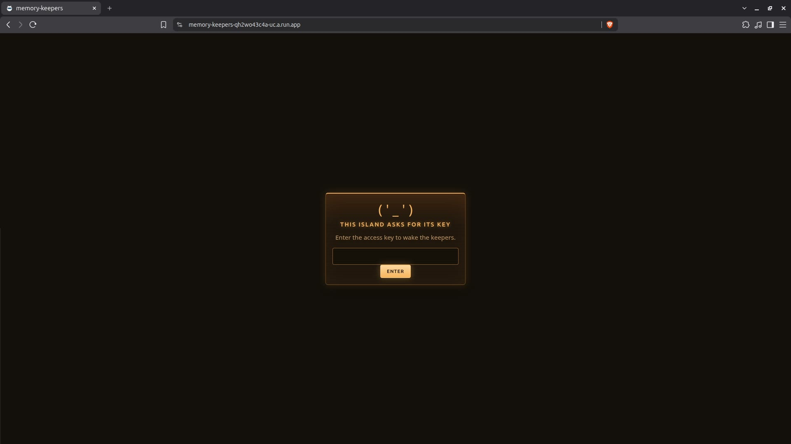
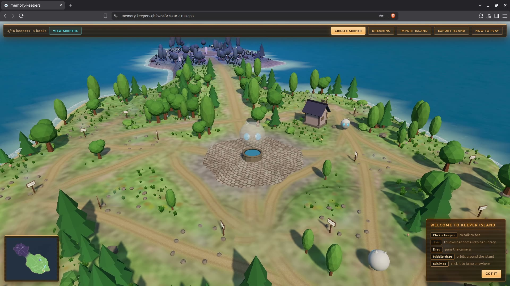

<!doctype html>
<html lang="en">
<meta charset="utf-8">
<title>Memory Keepers · Console dive</title>
<meta name="viewport" content="width=device-width, initial-scale=1">
<style>
  :root {
    --bg: #0e1114;
    --paper: #161b20;
    --ink: #e8eaed;
    --muted: #9aa0a6;
    --line: #2a3138;
    --blue: #8ab4f8;
    --ok: #81c995;
  }
  * { box-sizing: border-box; margin: 0; padding: 0; border-radius: 0 }
  html, body { height: 100%; background: var(--bg); color: var(--ink);
    font-family: "Noto Sans", Roboto, "Segoe UI", sans-serif; }
  body { display: flex; flex-direction: column; }
  header {
    display: flex; align-items: center; gap: 16px;
    padding: 12px 20px; border-bottom: 1px solid var(--line);
    background: var(--paper); flex: none;
  }
  header b { color: var(--blue); letter-spacing: .12em; font-size: 12px; }
  header .meta { color: var(--muted); font-size: 13px; margin-left: auto; }
  #bar { height: 3px; background: var(--line); flex: none; }
  #bar i { display: block; height: 100%; width: 0; background: var(--blue); }
  main {
    flex: 1; display: grid; grid-template-columns: 220px 1fr;
    min-height: 0;
  }
  nav {
    border-right: 1px solid var(--line); padding: 16px 0; overflow: auto;
    background: #12161a;
  }
  nav button {
    display: block; width: 100%; text-align: left; background: none; border: 0;
    color: var(--muted); padding: 7px 18px; font: 600 12px/1.3 inherit;
    cursor: pointer; letter-spacing: .04em;
  }
  nav button.on { color: var(--ink); background: #1c232b; }
  article { padding: 28px 36px 40px; overflow: auto; max-width: 920px; }
  .k { color: var(--blue); font-size: 12px; letter-spacing: .16em;
    text-transform: uppercase; font-weight: 700; }
  h1 { font-size: 28px; font-weight: 650; margin: 8px 0 12px; line-height: 1.2; }
  p, li { color: #c4c7cc; font-size: 16px; line-height: 1.55; }
  p { margin: 0 0 12px; max-width: 62ch; }
  ol { margin: 0 0 16px 1.2em; }
  li { margin: 6px 0; }
  .click {
    background: #1c232b; border: 1px solid var(--line);
    padding: 14px 16px; margin: 16px 0; font-size: 17px; font-weight: 650;
    color: var(--ink);
  }
  .click span { color: var(--blue); font-weight: 700; }
  code, pre {
    font-family: ui-monospace, "Roboto Mono", monospace;
    font-size: 13px;
  }
  code { background: #1c232b; padding: 1px 6px; color: var(--ok); }
  pre {
    background: #1c232b; border: 1px solid var(--line);
    padding: 12px 14px; overflow: auto; margin: 12px 0 16px;
    white-space: pre-wrap;
  }
  .wait { color: var(--ok); font-size: 14px; margin: 12px 0; }
  .skip { color: var(--muted); font-size: 14px; margin: 8px 0 16px; }
  img.shot {
    display: block; width: 100%; max-width: 820px;
    border: 1px solid var(--line); margin: 16px 0 8px;
  }
  .cap { color: var(--muted); font-size: 12px; margin: 0 0 16px; }
  a.goto {
    display: inline-block; background: var(--blue); color: #0e1114;
    text-decoration: none; font-weight: 700; padding: 10px 14px;
    margin: 8px 8px 16px 0; font-size: 14px;
  }
  footer {
    display: flex; gap: 10px; align-items: center;
    padding: 12px 20px; border-top: 1px solid var(--line);
    background: var(--paper); flex: none;
  }
  footer button {
    background: var(--blue); color: #0e1114; border: 0;
    padding: 10px 18px; font: 700 14px inherit; cursor: pointer;
  }
  footer button:disabled { opacity: .35; cursor: default; }
  footer .hint { color: var(--muted); font-size: 12px; margin-left: auto; }
</style>
<header>
  <b>CONSOLE DIVE</b>
  <span>Google Cloud Console, August 2026. One click at a time.</span>
  <span class="meta" id="count"></span>
</header>
<div id="bar"><i></i></div>
<main>
  <nav id="nav"></nav>
  <article id="pane"></article>
</main>
<footer>
  <button id="prev" type="button">Back</button>
  <button id="next" type="button">Next</button>
  <span class="hint">Left / Right arrows. Keep this window beside Console.</span>
</footer>
<script>
const steps = [
{
  ch: "Sit down",
  title: "What this is",
  html: `
    <p>This is every Console click that <code>./deploy.sh</code> does, plus creating the project and linking billing. Region is always <code>us-central1</code>.</p>
    <p>Keep this page on one screen. Console on the other. Do not rush the waits. Cloud Build is several minutes of sitting.</p>
    <p>Have the repo on disk, and <code>.env</code> with <code>INTERNAL_TOKEN</code> and the island key. Do not paste those values into chat, screenshots, or this guide.</p>
    <p class="wait">About 30 minutes the first time. Half of that is waiting on the build.</p>
  `
},
{
  ch: "Sit down",
  title: "Open Console",
  html: `
    <div class="click">Open <span>console.cloud.google.com</span> in Chrome. Sign in.</div>
    <a class="goto" href="https://console.cloud.google.com/" target="_blank" rel="noopener">Open Console</a>
    <p>You should see the dark Google Cloud shell: search at the top, a project picker, the waffle of products.</p>
  `
},
{
  ch: "Project",
  title: "Manage resources",
  html: `
    <div class="click">Open <span>Manage resources</span>.</div>
    <a class="goto" href="https://console.cloud.google.com/cloud-resource-manager" target="_blank" rel="noopener">Open Manage resources</a>
    <p>Top of the page: <strong>Create project</strong> in blue, next to Create folder.</p>
    <p class="skip">If you already have the live project selected, skip to Billing.</p>
    
    <p class="cap">Create project is the first control in the toolbar.</p>
  `
},
{
  ch: "Project",
  title: "Create project",
  html: `
    <div class="click">Click <span>Create project</span>.</div>
    <p>The New Project form opens. There is a yellow quota note. Ignore it unless it says you cannot create more projects.</p>
  `
},
{
  ch: "Project",
  title: "Project name",
  html: `
    <div class="click">In <span>Project name</span>, type <code>memory-keepers</code>.</div>
    <p>Google fills a Project ID under the field. That ID is global and cannot change later.</p>
    
    <p class="cap">Name is memory-keepers. The ID line under it is unique to you.</p>
  `
},
{
  ch: "Project",
  title: "Project ID",
  html: `
    <div class="click">If you want a specific ID, click <span>Edit</span> next to the Project ID and type it.</div>
    <p>Allowed: lowercase letters, numbers, hyphens. Example shape: <code>memory-keepers-xxxxxx</code>.</p>
    <p>Write the ID on paper. You will paste it into Cloud Shell later.</p>
  `
},
{
  ch: "Project",
  title: "Parent",
  html: `
    <div class="click">Leave <span>Parent resource</span> as <strong>No organization</strong>.</div>
    <p>A personal Gmail account lives here. Do not pick a company folder unless you mean to.</p>
  `
},
{
  ch: "Project",
  title: "Create",
  html: `
    <div class="click">Click the blue <span>Create</span> button.</div>
    <p class="wait">Wait. The bell in the top right ticks. A green line: Create Project: memory-keepers.</p>
    <p>Do not click around until that notification lands.</p>
  `
},
{
  ch: "Project",
  title: "Select the project",
  html: `
    <div class="click">In the notification, click <span>Select Project</span>. Or use the project picker at the top and pick memory-keepers.</div>
    <p>The picker must show this project for every later page. If it does not, the APIs land on the wrong one.</p>
    
  `
},
{
  ch: "Billing",
  title: "Link billing",
  html: `
    <div class="click">Open <span>Billing</span> for this project.</div>
    <a class="goto" href="https://console.cloud.google.com/billing/linkedaccount" target="_blank" rel="noopener">Open linked billing</a>
    <p>If it already shows an account, you are done. If it asks to link one, pick the hackathon billing account and confirm.</p>
    <p>Vertex, Cloud Run, and speech will not start without billing.</p>
  `
},
{
  ch: "APIs",
  title: "Enable the APIs, one page",
  html: `
    <div class="click">Open this enable flow. Check the project picker. Click <span>Enable</span>.</div>
    <a class="goto" href="https://console.cloud.google.com/apis/enableflow?apiid=run.googleapis.com,firestore.googleapis.com,pubsub.googleapis.com,aiplatform.googleapis.com,texttospeech.googleapis.com,speech.googleapis.com,cloudscheduler.googleapis.com,cloudbuild.googleapis.com,artifactregistry.googleapis.com" target="_blank" rel="noopener">Enable all nine APIs</a>
    <p>That list is: Cloud Run, Firestore, Pub/Sub, Agent Platform API (the former Vertex AI API, service aiplatform.googleapis.com), Cloud Text-to-Speech, Cloud Speech-to-Text, Cloud Scheduler, Cloud Build, Artifact Registry.</p>
    <p class="wait">Wait until the page says they are enabled. About a minute.</p>
  `
},
{
  ch: "IAM",
  title: "Read the project number",
  html: `
    <div class="click">Open <span>Welcome</span>. Copy <strong>Project number</strong>.</div>
    <a class="goto" href="https://console.cloud.google.com/welcome" target="_blank" rel="noopener">Open Welcome</a>
    <p>You need the number, not only the ID. The Cloud Build account is:</p>
    <pre>PROJECT_NUMBER-compute@developer.gserviceaccount.com</pre>
    <p>Write that full email down.</p>
    
    <p class="cap">Project number sits in Project info. Cover it on camera.</p>
  `
},
{
  ch: "IAM",
  title: "Open IAM",
  html: `
    <div class="click">Open <span>IAM</span> for this project.</div>
    <a class="goto" href="https://console.cloud.google.com/iam-admin/iam" target="_blank" rel="noopener">Open IAM</a>
    <p>You should see your user as Owner. The compute service account may already have Editor. Editor is not enough for Cloud Build source deploys.</p>
  `
},
{
  ch: "IAM",
  title: "Grant access",
  html: `
    <div class="click">Click <span>Grant access</span> at the top of the principals table.</div>
    <p>A panel opens on the right: New principals, then Select a role.</p>
  `
},
{
  ch: "IAM",
  title: "Paste the compute account",
  html: `
    <div class="click">In <span>New principals</span>, paste the compute email.</div>
    <pre>PROJECT_NUMBER-compute@developer.gserviceaccount.com</pre>
    <p>Google should resolve it to Compute Engine default service account. If it does not, you typed the number wrong.</p>
  `
},
{
  ch: "IAM",
  title: "Role one: Cloud Run Builder",
  html: `
    <div class="click">Select a role. Search <span>Cloud Run Builder</span>. Click it.</div>
    <p>This is the role the 2026 Cloud Run source-deploy docs name.</p>
  `
},
{
  ch: "IAM",
  title: "Role two: Cloud Build Builder",
  html: `
    <div class="click">Click <span>Add another role</span>. Search <span>Cloud Build Builder</span>. Click it.</div>
  `
},
{
  ch: "IAM",
  title: "Role three: Storage Object Viewer",
  html: `
    <div class="click">Click <span>Add another role</span>. Search <span>Storage Object Viewer</span>. Click it.</div>
    <div class="click">Click <span>Save</span>.</div>
    <p class="wait">Wait two minutes. IAM is slow to reach Cloud Build and Cloud Storage. If you deploy in the next ten seconds, you get PERMISSION_DENIED on the source zip.</p>
  `
},
{
  ch: "Bucket",
  title: "Open Cloud Storage",
  html: `
    <div class="click">Open <span>Cloud Storage Buckets</span>.</div>
    <a class="goto" href="https://console.cloud.google.com/storage/browser" target="_blank" rel="noopener">Open Buckets</a>
    <p>Source deploy uploads a zip to a bucket named exactly:</p>
    <pre>run-sources-PROJECT_ID-us-central1</pre>
    <p>Replace PROJECT_ID with your id. All lowercase. No extra words.</p>
  `
},
{
  ch: "Bucket",
  title: "Create the bucket",
  html: `
    <div class="click">Click <span>Create</span>.</div>
    <ol>
      <li>Name: <code>run-sources-PROJECT_ID-us-central1</code></li>
      <li>Location type: <strong>Region</strong></li>
      <li>Location: <strong>us-central1 (Iowa)</strong></li>
      <li>Continue. Storage class: leave Standard.</li>
      <li>Access: <strong>Uniform</strong> bucket-level access. Leave public access prevention on.</li>
      <li>Protection: leave defaults.</li>
    </ol>
    <div class="click">Click <span>Create</span>.</div>
    <p class="skip">If the bucket already exists from a failed deploy, do not create it again. Open it and go to Permissions.</p>
  `
},
{
  ch: "Bucket",
  title: "Name the compute account on the bucket",
  html: `
    <div class="click">Open the bucket. Open the <span>Permissions</span> tab. Click <span>Grant access</span>.</div>
    <ol>
      <li>New principals: the same compute email.</li>
      <li>Role: <strong>Storage Object Admin</strong></li>
    </ol>
    <div class="click">Click <span>Save</span>. Confirm if it warns.</div>
    <p>Without this, Cloud Build cannot read the zip. That is the error you already hit.</p>
  `
},
{
  ch: "Firestore",
  title: "Open Firestore",
  html: `
    <div class="click">Open <span>Firestore Databases</span>.</div>
    <a class="goto" href="https://console.cloud.google.com/firestore/databases" target="_blank" rel="noopener">Open Firestore</a>
    <p class="skip">If a (default) database is already there in us-central1 Native, skip the rest of this chapter.</p>
  `
},
{
  ch: "Firestore",
  title: "Create the database",
  html: `
    <div class="click">Click <span>Create a Firestore database</span>.</div>
    <ol>
      <li>Mode: <strong>Native</strong>. Continue.</li>
      <li>Database ID: leave <code>(default)</code>.</li>
      <li>Location type: Region. Location: <strong>us-central1</strong>.</li>
      <li>Edition: Standard, unless the form only offers one.</li>
      <li>Leave delete protection off for this project.</li>
    </ol>
    <div class="click">Click <span>Create database</span>.</div>
    <p class="wait">Wait until the database shows as ready. One or two minutes.</p>
  `
},
{
  ch: "Cloud Run",
  title: "How Console deploys source in 2026",
  html: `
    <p>Cloud Run source deploy is a gcloud command. The Console way is to open Cloud Shell from this same window, so gcloud is already aimed at the project.</p>
    <p>Connect repo also works later, for pushes. First deploy needs the env vars set. Cloud Shell is the path that matches the script.</p>
  `
},
{
  ch: "Cloud Run",
  title: "Activate Cloud Shell",
  html: `
    <div class="click">In the top bar, click the <span>Activate Cloud Shell</span> icon (terminal in a cloud).</div>
    <p>A terminal opens at the bottom. Authorize if asked. Wait for the prompt.</p>
    <p>Confirm the project:</p>
    <pre>gcloud config get-value project</pre>
    <p>If that is not your new ID:</p>
    <pre>gcloud config set project PROJECT_ID</pre>
  `
},
{
  ch: "Cloud Run",
  title: "Get the code into Cloud Shell",
  html: `
    <p>If Cloud Shell is empty:</p>
    <pre>git clone https://github.com/hec-ovi/memory-keepers
cd memory-keepers</pre>
    <p>If you already cloned it, <code>cd memory-keepers</code> and <code>git pull</code>.</p>
    <p>The Dockerfile at the repo root is what Cloud Build will use.</p>
  `
},
{
  ch: "Cloud Run",
  title: "Load the secrets",
  html: `
    <p>In Cloud Shell, set the two values from your local <code>.env</code>. Type them. Do not screenshot this line.</p>
    <pre>export INTERNAL_TOKEN='paste from .env'
export ACCESS_CODE='paste from .env'</pre>
    <p>Optional: <code>export OMDB_KEY='...'</code> if you have one.</p>
  `
},
{
  ch: "Cloud Run",
  title: "Deploy from source",
  html: `
    <div class="click">Paste this as one block. Replace PROJECT_ID.</div>
    <pre>gcloud run deploy memory-keepers --source . --region us-central1 \\
  --allow-unauthenticated \\
  --min-instances 1 --no-cpu-throttling \\
  --memory 1Gi --timeout 300 --max-instances 2 \\
  --set-env-vars "GOOGLE_CLOUD_PROJECT=PROJECT_ID,GOOGLE_CLOUD_LOCATION=global,GOOGLE_GENAI_USE_VERTEXAI=TRUE,MODEL_TIER=cloud,DREAM_DISPATCH=pubsub,DREAM_TOPIC=dream-runs,INTERNAL_TOKEN=$INTERNAL_TOKEN,ACCESS_CODE=$ACCESS_CODE"</pre>
    <p>If Cloud Shell asks to create the Artifact Registry repo <code>cloud-run-source-deploy</code>, say yes.</p>
    <p class="wait">Building Container takes several minutes. Leave it. Do not close Cloud Shell.</p>
  `
},
{
  ch: "Cloud Run",
  title: "Copy the URL",
  html: `
    <p>When it finishes, the last lines look like:</p>
    <pre>Service URL: https://memory-keepers-xxxxx-uc.a.run.app
deployed: https://...</pre>
    <div class="click">Copy that <span>.run.app</span> URL. You need it twice below.</div>
    <p>If you see PERMISSION_DENIED on the compute service account, go back to IAM and the bucket, wait two minutes, run the same deploy command again.</p>
  `
},
{
  ch: "Pub/Sub",
  title: "Create the topic",
  html: `
    <div class="click">Open <span>Pub/Sub Topics</span>. Click <span>Create topic</span>.</div>
    <a class="goto" href="https://console.cloud.google.com/cloudpubsub/topic/create" target="_blank" rel="noopener">Create topic</a>
    <ol>
      <li>Topic ID: <code>dream-runs</code></li>
      <li>Turn <strong>off</strong> Add a default subscription. You will make a push one yourself.</li>
    </ol>
    <div class="click">Click <span>Create</span>.</div>
    <p class="skip">If the topic already exists, skip.</p>
  `
},
{
  ch: "Pub/Sub",
  title: "Create the push subscription",
  html: `
    <div class="click">Open <span>Subscriptions</span>. Click <span>Create subscription</span>.</div>
    <a class="goto" href="https://console.cloud.google.com/cloudpubsub/subscription/create" target="_blank" rel="noopener">Create subscription</a>
    <ol>
      <li>Subscription ID: <code>dream-runs-push</code></li>
      <li>Topic: <code>dream-runs</code></li>
      <li>Delivery type: <strong>Push</strong></li>
      <li>Endpoint URL, one line, no spaces:</li>
    </ol>
    <pre>YOUR_RUN_URL/internal/dream-run?token=INTERNAL_TOKEN</pre>
    <ol start="5">
      <li>Acknowledgement deadline: <strong>600</strong> seconds</li>
    </ol>
    <div class="click">Click <span>Create</span>.</div>
    <p>Leave Enable authentication off. The token in the query string is the gate.</p>
  `
},
{
  ch: "Scheduler",
  title: "Create the nightly job",
  html: `
    <div class="click">Open <span>Cloud Scheduler</span>. Click <span>Create job</span>.</div>
    <a class="goto" href="https://console.cloud.google.com/cloudscheduler" target="_blank" rel="noopener">Open Cloud Scheduler</a>
    <ol>
      <li>Name: <code>nightly-dream</code></li>
      <li>Region: <strong>us-central1</strong></li>
      <li>Frequency: <code>0 3 * * *</code></li>
      <li>Timezone: pick yours. The script uses UTC. Either is fine for a demo.</li>
    </ol>
    <div class="click">Click <span>Continue</span>.</div>
  `
},
{
  ch: "Scheduler",
  title: "HTTP target",
  html: `
    <ol>
      <li>Target type: <strong>HTTP</strong></li>
      <li>URL:</li>
    </ol>
    <pre>YOUR_RUN_URL/internal/nightly?token=INTERNAL_TOKEN</pre>
    <ol start="3">
      <li>HTTP method: <strong>POST</strong></li>
      <li>Auth header: leave as None. The token is in the URL.</li>
    </ol>
    <div class="click">Click <span>Create</span>.</div>
    <p class="skip">If the job already exists, skip.</p>
  `
},
{
  ch: "Open",
  title: "Open the island",
  html: `
    <div class="click">Paste the <span>.run.app</span> URL in a new tab.</div>
    <p>You should see the key screen. Type the island key from <code>.env</code>. Click Enter.</p>
    
    <p class="cap">The key is dots. Do not film the value. Enter sits under the field.</p>
  `
},
{
  ch: "Open",
  title: "It is live",
  html: `
    <p>The island loads. Address bar still shows <code>.run.app</code>. That is the Google backend shot.</p>
    
    <p>Optional next: Cloud Run service page, Logs, Firestore data, Pub/Sub topic <code>dream-runs</code>. Those four tabs are the Console proof.</p>
    <p class="wait">You are done. The script is this list without the clicking.</p>
  `
}
];

const nav = document.getElementById("nav");
const pane = document.getElementById("pane");
const prev = document.getElementById("prev");
const next = document.getElementById("next");
const count = document.getElementById("count");
const bar = document.querySelector("#bar i");
let i = 0;
const seen = new Set();
steps.forEach((s, n) => { if (!seen.has(s.ch)) { seen.add(s.ch);
  const b = document.createElement("button");
  b.type = "button"; b.textContent = s.ch; b.dataset.ch = s.ch;
  b.addEventListener("click", () => show(steps.findIndex(x => x.ch === s.ch)));
  nav.appendChild(b);
}});
function show(n) {
  i = Math.max(0, Math.min(steps.length - 1, n));
  const s = steps[i];
  pane.innerHTML = `<div class="k">${s.ch} · ${i + 1} / ${steps.length}</div>
    <h1>${s.title}</h1>${s.html}`;
  count.textContent = `${i + 1} / ${steps.length}`;
  bar.style.width = ((i + 1) / steps.length * 100) + "%";
  prev.disabled = i === 0;
  next.disabled = i === steps.length - 1;
  nav.querySelectorAll("button").forEach(b => b.classList.toggle("on", b.dataset.ch === s.ch));
  if (location.protocol !== "file:") {
    try { history.replaceState(null, "", "#" + (i + 1)); } catch (e) {}
  }
  pane.scrollTop = 0;
}
prev.onclick = () => show(i - 1);
next.onclick = () => show(i + 1);
document.addEventListener("keydown", e => {
  if (e.key === "ArrowRight" || e.key === " ") { e.preventDefault(); show(i + 1); }
  if (e.key === "ArrowLeft") { e.preventDefault(); show(i - 1); }
});
const start = parseInt(location.hash.slice(1), 10);
show(Number.isFinite(start) && start > 0 ? start - 1 : 0);
</script>
